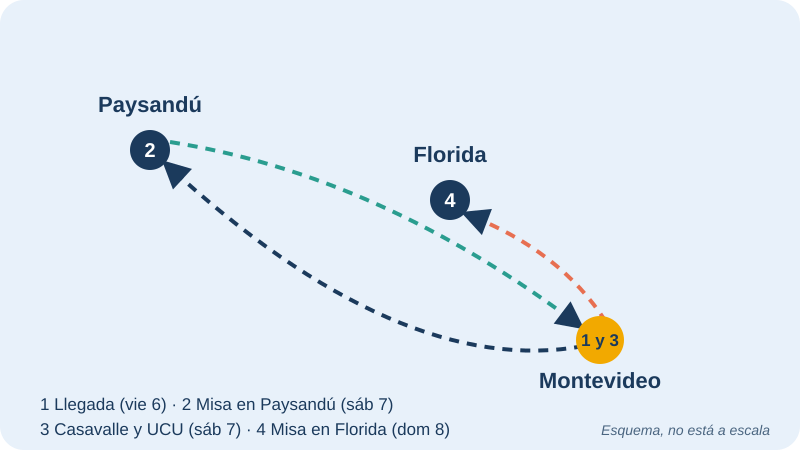

La llegada del Papa León XIV a Uruguay
Del 6 al 8 de noviembre de 2026, el Papa León XIV visitó Uruguay. Fue la primera parada de un viaje de doce días por Sudamérica que continuó en Argentina y Perú.
Se trató de la primera visita de un Papa al país en 38 años: la anterior fue la de Juan Pablo II, entre 1987 y 1988. El lema elegido para la visita fue «Les anuncio una gran alegría».
El viaje pasó por tres lugares del país: Montevideo, Paysandú y Florida.
La llegada
El Papa llegó el viernes 6 de noviembre por la tarde al Aeropuerto Internacional de Carrasco, en Montevideo, después de un vuelo de casi catorce horas desde Roma. Fue recibido por el presidente de la República, Yamandú Orsi.
Desde Uruguay, el Papa siguió su viaje hacia Argentina y luego Perú, entre el 6 y el 17 de noviembre.
Contenido trabajado en Formación Cristiana
La Iglesia de Montevideo presentó la visita como un mensaje de esperanza para todo el país. El cardenal Daniel Sturla, arzobispo de Montevideo, explicó que el Papa llegaba con un mensaje dirigido a todas las personas, y no solo a quienes forman parte de la Iglesia Católica.
Reflexión: ¿qué relación tiene con decidir con responsabilidad?
- Una visita de este tipo invita a pensar en los valores con los que tomamos decisiones: el cuidado de los demás, la esperanza y la solidaridad.
- Decidir con responsabilidad también es pensar en cómo mis decisiones afectan a otras personas.
- Tanto en la fe como en la vida cotidiana, escuchar, informarse y respetar al otro ayuda a decidir mejor.
Agenda de la visita
| Día | Lugar | Actividad |
|---|---|---|
| Viernes 6 | Montevideo (Aeropuerto de Carrasco) | Llegada y recibimiento por el presidente Yamandú Orsi. |
| Sábado 7 (mañana) | Paysandú | Misa. |
| Sábado 7 (tarde) | Montevideo | Visita al barrio Casavalle y a la Universidad Católica del Uruguay. |
| Domingo 8 | Florida | Misa en Florida, ciudad del Santuario Nacional de la Virgen de los Treinta y Tres. Por la tarde, viaje a Argentina. |

Datos rápidos
- Fechas en Uruguay: 6 al 8 de noviembre de 2026.
- Gira completa: del 6 al 17 de noviembre, por Uruguay, Argentina y Perú.
- Ciudades visitadas: Montevideo, Paysandú y Florida.
- Última visita de un Papa: Juan Pablo II, en 1987 y 1988.
- Lema: «Les anuncio una gran alegría».
Fuentes
- ACI Prensa: León XIV visitará Uruguay, Argentina y Perú del 6 al 17 de noviembre
- Vatican News: Sturla, la visita de León XIV será una buena noticia para todo el Uruguay
- El Observador: León XIV llegará a Uruguay 38 años después de la última visita de Juan Pablo II
- Diario de Yucatán: Papa León XIV llega a Uruguay e inicia gira de 12 días por Latinoamérica
- Telemundo 51: Papa León XIV concluye su visita en Uruguay y se dirige a Argentina
- Cadena 3: La Iglesia de Montevideo confirma la visita del Papa León XIV